Web Application Portfolio
Below you will find examples of various web applications that I have built in ArcGIS products, specifcally Experience Builder. As Esri phases Web App Builder out, I have pivoted primarily to Experience Builder to create more custom and accessible web applications in my work. If a web application is public, it will be linked in the description. If not, you can click the image to view it in a new tab.
2024/2025 Colorado Enterprise Zone Redesignation Tool
OIT | Experience Builder
The 2024/2025 Enterpise Zone Redesignation Tool is a web mapping application to assist in the process of re-evaluating Colorado's Enterprise Zones. The purpose of the 2024/2025 Enterprise Zone Redesignation Tool is to provide a cartographic aid in the process of selecting geographies of interest to be submitted for consideration for the 2024/2025 Enterprise Zone Redesignation Process. The tool provides users with a visual map representation of various levels of Census geographies, symbolized by whether or not they meet criteria for consideration.
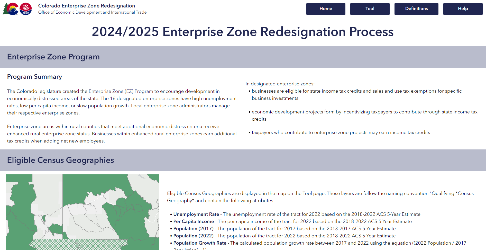 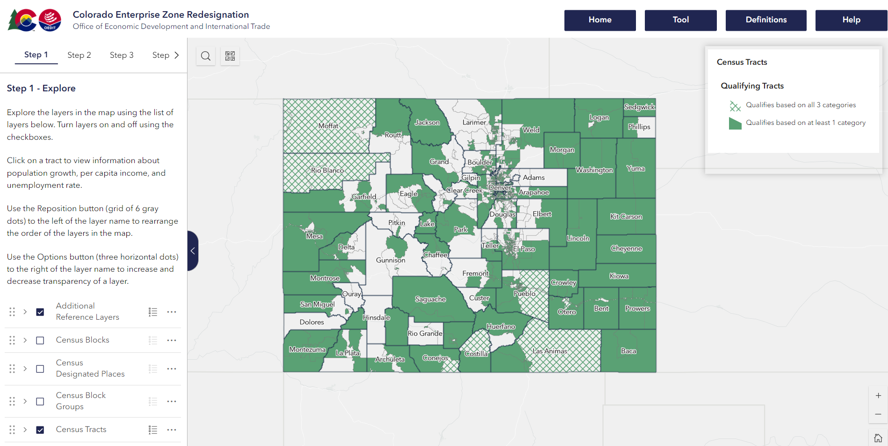2023 State of Colorado GIS Year in Review
OIT | Experience Builder
The 2023 State of Colorado GIS Year in Review
is a collection of GIS applications by various Colorado state agencies. I used Survey123 to collect responses and create this site for
users to explore the breadth of GIS across the State of Colorado. This application is featured in the Esri Experience Builder Gallery, won the Professional App Category in the
Elevations Geospatial Summit 2024 Mapping Contest, and was highlighted in the statewide technology newsletter:
Recognition of the team's work underscores the importance of geospatial technology in enhancing government services
and community well-being. This achievement is a testament to the power of creative and effective communication about
integrating GIS in the lives of Coloradans and highlights the critical role of geospatial applications in modern governance.
Open Petroleum Event Viewer
OIT | Experience Builder
The Open Petroleum Event Viewer displays the locations of open petroleum events and well locations across the state. This app serves the Colorado Department of Labor and Employment staff to filter events by location and attribute and identify potential hazards of open events regarding their proximity to wells.
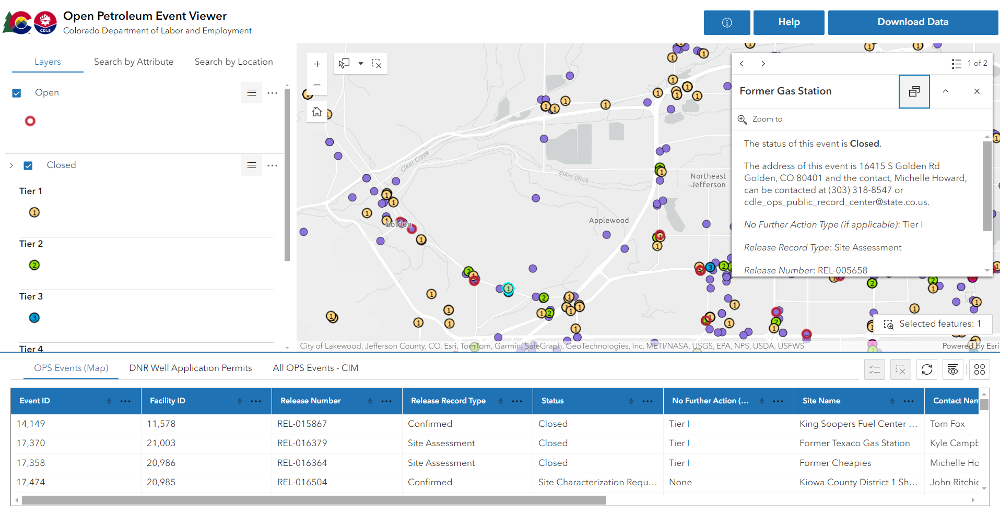Vehicle Exchange Program - Participating Dealerships
OIT | Experience Builder
I created this application as a mock-up for the Colorado Energy Office Vehicle Exchange Program. The application was never made public, but the idea is that a user could choose a dealership location from the list on the left, and the map would zoom into the location and provide the address, phone number, and link out to the website.
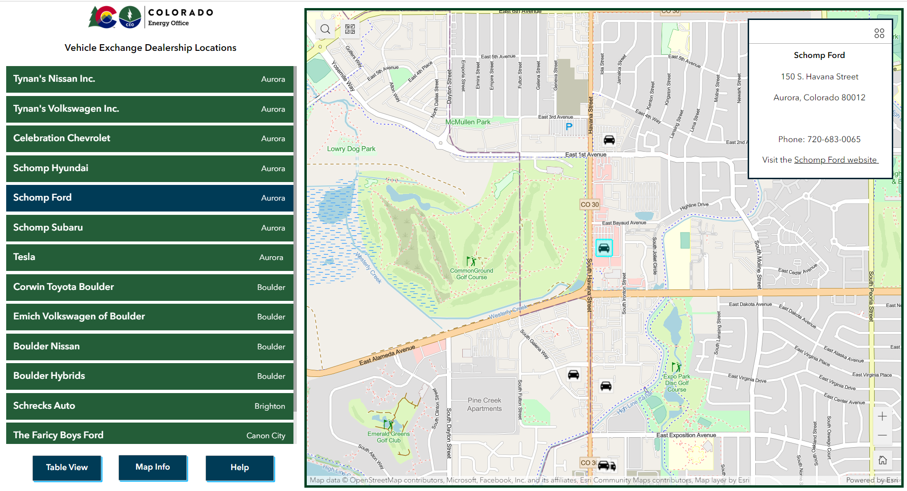The Aspen Archives - Arborglyph Location Explorer
Independent Research | Experience Builder
This web application allows users to explore and filter the locations of arborglyphs in Routt County, Colorado. When a user clicks on a point or area, the pop-up will display an image of the arborglyph and information about the artist, date, and category.
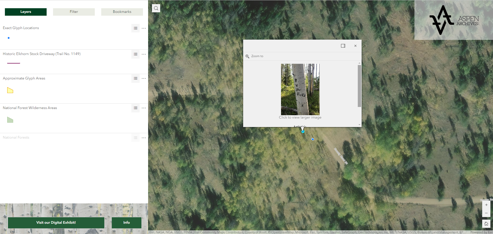Jackson County Parcel Viewer
OIT | Experience Builder
This application is restricted to Jackson County staff but assists them in visualizing parcels and Census roads and address ranges to supplement address data efforts. This application is part of a restricted ArcGIS Hub site that restricts users to necessary Jackson County staff.
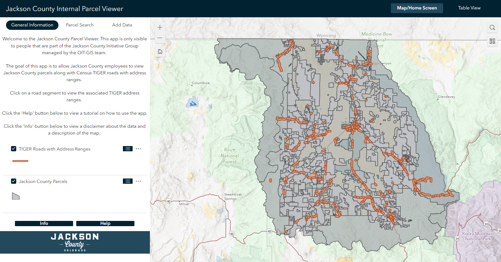Historical Address and Parcel Sharing Preferences Viewer
OIT | Experience Builder
The Historical Address and Parcel Sharing Viewer displays the current and historical sharing preferences requested by counties during the OIT-GIS Annual Data Call. This app is used to encourage participation during outreach efforts.
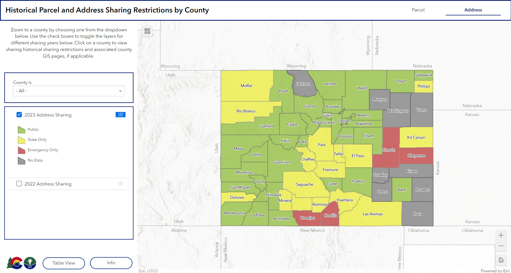Sedgwick County Assessor Viewer
OIT | Experience Builder
The first image below shows an old version of a map viewer for the Sedgwick County assessor. I rebuilt this applicaiton in Experience Builder to increase accessibility and migrate the application away from Web App Builder in the interest of future updates. The second image illustrates the new version of the Sedgwick County Assessor App.
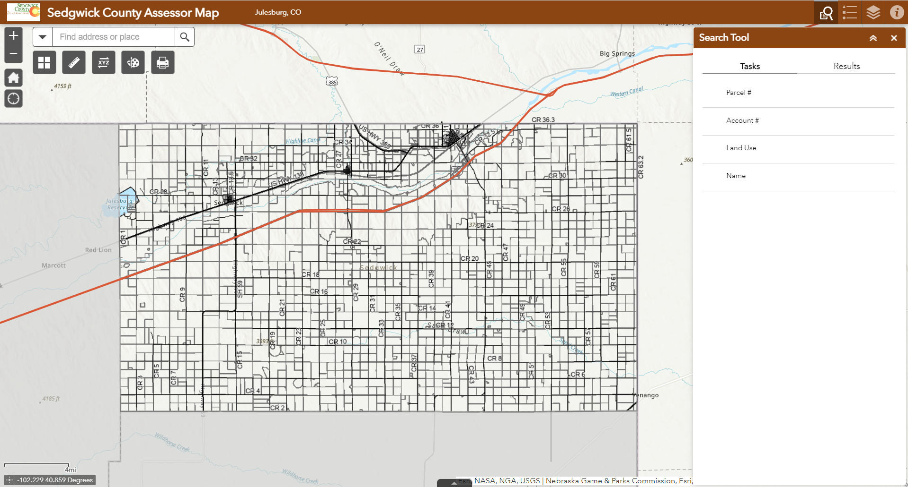 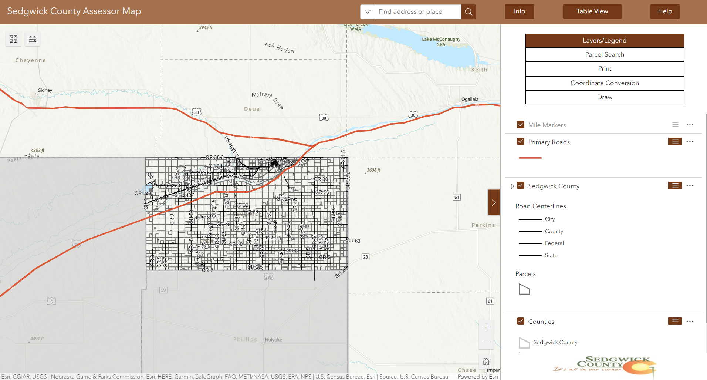Hub Metrics Dashboard
OIT | Experience Builder
The images below show a dashboard-like application to view the metrics of an ArcGIS Hub Organizaiton. This app was built for fun to explore the design and customization capabilities of Experience Builder. It uses the dynamic data funciton included in text widgets to display metrics pulled from table items in ArcGIS Online.
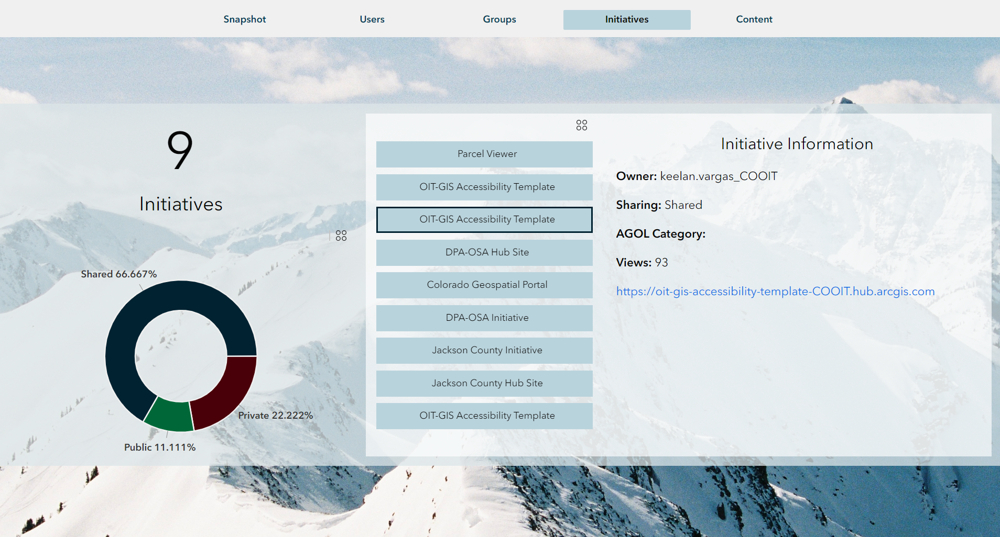 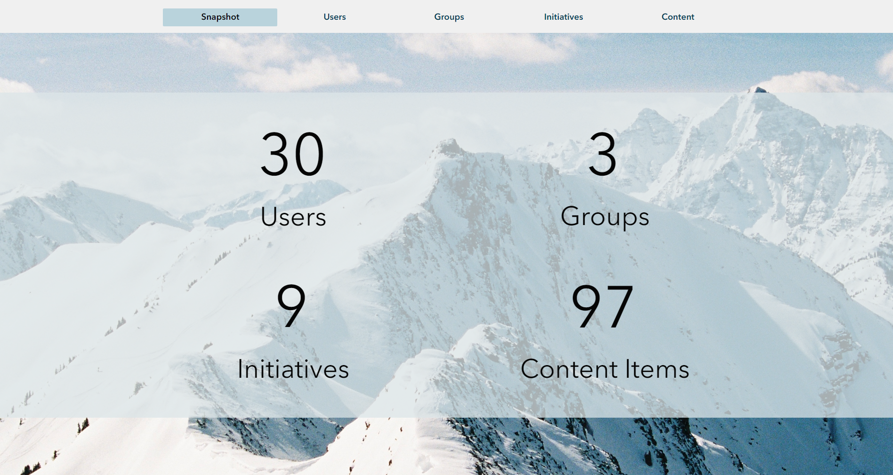